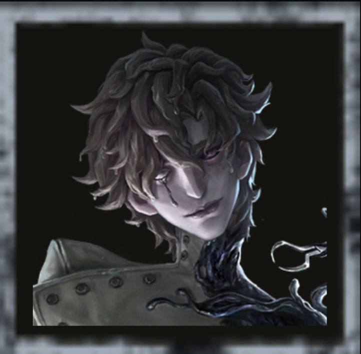

ハンター全体ランキング
大会競技シーンや使ってて強い、使われてて強いと感じたハンターをランキング形式で紹介していきます。
（あくまで個人的なので、もっと良いキャラがいればコメントお願いします。異論求めます。）
🏆 S Tier 解説へ ▼

女王蜂

歯医者

ビリヤードプレイヤー

足萎えの羊

オペラ歌手

フラバルー

時空の影

雑貨商
🌟 A Tier 解説へ ▼

夢の魔女

書記官

漁師

使徒

魔トカゲ

白黒無常

結魂者

蝋人形師

隠者

断罪狩人

ガードNo.26

夜の番人

悪夢

アンデッド

破輪

彫刻師

道化師
⭐ B Tier 解説へ ▼

血の女王

芸者

フールズ・ゴールド

リッパー
💥 C Tier 解説へ ▼

復讐者

写真家

狂眼

黄衣の王

泣き虫

ヴァイオリニスト
このランキングの評価基準
本ランキングは、6年以上のプレイ経験と大会（IVL・IJL等）の試合観戦をもとに、第五録が独自に評価したものです。 以下の3つの基準を総合してティアを決めています。
- ① 4人吊り（4割）を現実的に狙えるか
- ハンターの最終目標は全滅です。チェイス・索敵・解読遅延のどれかが欠けると上位サバイバー相手に 4割は狙えなくなるため、「弱点の少なさ」を最重要視しています。
- ② キャラ調整による強化
- 直近のバランス調整での強化・弱体化を反映しています。 ハンターは数値ひとつでティアが激変しやすいため、調整内容と実戦の体感を両方見ています。
- ③ 大会使用率・BAN率
- プロシーンでBANされ続けるハンターは、それだけでサバイバー側に「対策コスト」を強いている証拠です。 ピック率だけでなくBAN率も評価に含めています。
🏆 Sティア解説 ─ 3つの「勝ち筋」とその代表
第五録では、Sティアのハンターを「全部入り型」「盤面制圧型」「チェイス理不尽型」の 3つの勝ち筋タイプで整理しています。 共通するのは、サバイバー側がBANを切らざるを得ない＝存在するだけで相手の選択肢を1つ潰せること。 ただし勝ち方はそれぞれ違うため、ここでは各タイプの代表を解説します。
全部入り型の代表歯医者
レンズによる遠距離攻撃、放射エリアへのワープ、減速スクリーンによるデバフと、 ハンターに欲しい要素を全部持っている最新の環境ハンターです。 特に風船拘束中まで攻撃手段があるため、救助狩りと粘着拒否の両方が強く、 サバイバー側の救助プランを根本から崩せます。 「何か一芸」ではなく「全部が高水準」という弱点のなさが、S筆頭に置いた理由です。
盤面制圧型の代表ビリヤードプレイヤー
ファーストチェイスにある程度時間はかけるものの、神出鬼没から入って手玉でダウンを取るのが通常セオリー。 そこから暗号機に圧をかけられれば、勝ちまで持っていくのが一気に簡単になります。 手玉を使った救助狩りや4割救助の阻止など、起点を作る動きが豊富なのも強みです。
椅子が暗号機に寄ってしまったり、暗号機が片側に固まったりすると、そこからビリヤードプレイヤーの無双状態が始まります。 3人盤面からの全体負荷や暗号機遅延も強力で、盤面制圧能力という一点で見れば一強の強さを誇る—— この「盤面そのものを支配する」勝ち筋を評価して、盤面制圧型の代表としました。
高速チェイス型の代表女王蜂
女王蜂は、とにかく最初からチェイスが強いハンターです。 0.5ダメージの毒針でエネルギーを回収しつつ、回収している間は自身のスピードが上昇するため、 距離がすぐに詰まるのが持ち味。
その0.5ダメージの毒針は確定ダメージで、板を倒したとき・窓を乗り越えたとき・ 毒針を撃ちつつ板当てをくらった相打ちのときなど、あらゆる場面で刺さります。 0.5ダメージを与えつつ距離を詰め、もう一度0.5ダメージから即座に通常攻撃で即ダウンを狙えるのも強みです。
そして救助盤面でやばいのがこのキャラ。存在感が貯まっているときは熱殺蜂球で0.5ダメージを 中間や椅子前付近で与え、「救助に行けない」という状況を作り出せます。 存在感がなくても毒針を与えれば救助狩りが狙える最強性能です。
さらに距離詰めができるのもこのハンターの最強なところ。 だいたいエネルギーが60ぐらいあればゲート間を行き来できるという、化物じみた機動力を誇ります。 この「最初から最後までチェイスで詰め切れる」性能を評価して、高速チェイス型の代表としました。
🌟 Aティア解説 ─ 「Sとの差」はどこにあるか
Aティアのハンターは弱いわけではありません。固有能力はS級でも、 「マップ相性が出やすい」「習熟難度が高く平均値が下がる」など、安定感の差がSとの分かれ目です。 その境界線が分かりやすい2体を取り上げます。
ボンボン ─ 精度を極めれば最強、環境で出番が減った
ボンボンは爆弾の精度が完璧なら、引き分け以上が必ず固くなるハンターです。 椅子前の爆弾設置、リモート爆弾の使い方、爆弾の置き位置—— 爆弾の精度と相手の心理を極めれば最強クラスの制圧力を発揮します。
Sに届かない理由は明確な弱点があること。苦手なサバイバーが多く、 距離を取ってくる相手にはとにかく弱い。さらに暗号機妨害など他サバイバーへの干渉が少なく、 盤面全体への影響力で環境ハンターに見劣りします。 「何でもできてしまう環境ハンターがいるなら、わざわざ使わなくてもいいか」となりがちで、 出番が減ってしまったのが現状。裏を返せば、使い手が極めればS級の詰め性能を出せるキャラです。
使徒 ─ 猫とランウェイを極めればS級
使徒は、猫の精度とランウェイさえ極めつくせれば余裕でSランクに入るハンターです。 猫を当ててスタン、猫を当てて救助狩り、猫を当てて威嚇して追い詰める、威嚇後にランウェイ—— サバイバーがどうしようもなくなるスキルを揃えています。
Sに届かない理由は、その強さが使い手の練度に大きく依存すること。 猫を当てる精度とランウェイの操作が噛み合えばS級の制圧力ですが、 裏を返せば練度が伴わないと真価を発揮できません。 「自身の練度が最強であればSランク能力」という、伸びしろの大きいAティアです。
⭐💥 B・Cティア解説 ─ なぜこの位置なのか
Bティアの共通点：勝ち筋はあるが「対策が浸透」
Bティアに置いたハンターの共通点は、明確な勝ち筋を持ちながら、 その勝ち筋がサバイバー側に広く知られてしまっていることです。 上位帯では対策の的になりやすい一方、対策が浸透していない中ランク帯まではまだまだ通用します。
Bの典型例：芸者
刹那生滅による奇襲・機動力は今でも強力ですが、「視線を向ければ止められる」という対策が 上位帯に完全に浸透しており、慣れた相手には能力を腐らされる場面が増えました。 能力が弱いのではなく「相手に知られすぎた」、Bティアの典型例です。
視線対策を崩せる調整（発動条件の緩和など）が入れば一気に環境へ戻れるポテンシャルがあります。 中ランク帯までなら現状でも十分にキャリーできるハンターです。
Cティアの共通点：解読速度に追いつけない
Cティアの共通点は、1チェイスに時間がかかりすぎる、または解読を止める手段が乏しく、 現環境のゲームスピードに能力が追いついていないことです。 キャラ愛で握る分には楽しいのですが、勝率を求めるなら調整待ちというのが正直なところです。 ただ、いずれもギミック自体は個性的で、調整次第で化ける素地はあります。
Cの典型例：写真家
写真世界という他にないギミックを持ちますが、写真の時間管理が難しいうえ、 現環境の解読速度に対して試合を遅らせる手段が乏しいのが厳しいところです。 ギミックの面白さはハンター随一なだけに、もったいないキャラの代表格です。
写真世界に解読遅延の効果が付与されれば、評価は一変する可能性があります。 コンセプトが唯一無二なぶん、調整が来たとき最も化けやすいCティアと見ています。
よくある質問
初心者はどのハンターから使えばいいですか？
まずは復讐者や道化師など、基本の索敵とチェイスを学べるハンターで「立ち回りの型」を覚えるのがおすすめです。いきなりSティアの操作難度が高いハンターを握ると、能力に振り回されて基礎が身につきません。
BANを考えると、結局どのハンターを練習すべきですか？
上位帯ではSティアのハンターはBANされる前提で考える必要があります。本命のSティア1体に加えて、Aティアから自分に合う「BANされにくいサブ」を1〜2体育てておくのが現実的です。
ランキングはどのタイミングで更新されますか？
大型のキャラ調整・新ハンター実装のタイミングで見直しています。新ハンターは実装直後と数週間後で評価が変わりやすいため、実戦の体感が固まってから反映する方針です。
まとめ・考察
現環境のハンターランキングは「弱点のなさ」が最大の評価軸です。チェイスが強いだけ、索敵が強いだけのハンターは上位サバイバーに弱点を突かれて勝ちきれず、全要素が高水準なハンターと、唯一無二の勝ち筋を持つハンターがSティアに並ぶ結果になりました。
ハンターはサバイバー以上に「使い込み」がティアを覆します。AティアやBティアでも、極めた1体は生半可なSティアより怖い存在になるので、このランキングは乗り換えの参考程度に、ぜひ自分の相棒を見つけてください。異論・意見はコメント欄でお待ちしています！
2026/06/11 ─ Sティアを勝ち筋タイプ別構成に刷新、各ティアの選定理由・FAQを追加
2025/09/10 ─ ランキング更新

サバイバーランキングはこちら
大会競技シーンや使ってて強い、使われてて強いと感じたサバイバーをランキング形式で紹介していきます。
（あくまで個人的なので、もっと良いキャラがいればコメントお願いします。異論求めます。）
大会競技シーンや使ってて強いと感じたサバイバーを紹介します。
第五人格の最強ハンターランキングを紹介しました。
ランキングへの不満、意見などがあれば、ぜひコメントしてください！！
できるだけ皆様が不快の思いのないコメント機能をご協力をお願いします。
みんなのコメント